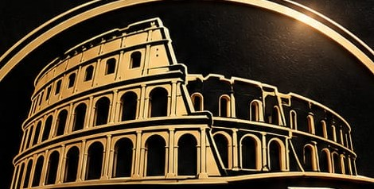

Tradición
Recetas que han pasado de generación en generación. Respetamos los tiempos, las técnicas y los sabores de siempre: un arroz con buen fondo, un asado que se hace sin prisa, una brasa bien llevada.


Quiénes somos
Una familia, una ciudad, una mesa
La historia
Calles de Roma nace de un sueño de familia: abrir en El Caracol una casa donde se come bien y sin prisas, con la cocina mediterránea como punto de partida y la firma propia de quien está entre fogones.
¿Por qué Roma? Porque durante siglos fue el corazón del Mediterráneo, la ciudad a la que llegaban el aceite, el vino, el pescado y las especias de todas sus orillas. Nuestras calles recorren ese mismo mapa: del arroz marinero a la brasa, de la huerta a los asados lentos, con algún guiño a nuestras raíces.
Las iniciales F.S. que firman nuestro nombre son las de quien lo hizo posible. Detrás de ellas hay años de oficio y la convicción de que comer bien es una de las formas más sinceras de cuidar a los demás. Hoy abrimos cada día, del primer café de la mañana al tardeo, con la misma ilusión del primer día.
— F.S., fundador

Nuestros valores
Como las columnas del Coliseo, todo lo que hacemos se sostiene sobre tres principios.
Recetas que han pasado de generación en generación. Respetamos los tiempos, las técnicas y los sabores de siempre: un arroz con buen fondo, un asado que se hace sin prisa, una brasa bien llevada.
Sobre esa base, platos con firma propia: el arroz «Marea Negra», el foie con piña y regañás o la Isla Canela. Producto de temporada, aceite de oliva virgen extra y lo mejor del mercado.
Que cada cliente se sienta en casa. Un servicio cercano y atento, sin prisas, que convierte una comida en un recuerdo.
El camino
Una mesa larga, buena compañía y la idea de que la cocina mediterránea podía tener firma propia. Ahí empezó todo.
Meses probando masas, salsas y vinos, y buscando a los productores que comparten nuestra forma de entender la cocina.
Transformamos nuestro espacio en El Caracol: negro, dorado y luz cálida, y un rincón reservado, Di Trevi, para las ocasiones especiales.
Calles de Roma abre sus puertas. Siete días a la semana, del primer café al tardeo, le esperamos.
«Buena comida,
El lema de la casa
mejores momentos»
Filosofía
Creemos en la cocina sin artificios: pocos ingredientes, de la mejor calidad, tratados con respeto. Creemos en las sobremesas largas, en el pan para mojar la salsa y en el café que cierra una buena comida.
Calles de Roma no es solo un restaurante. Es el lugar donde se celebra un cumpleaños, se cierra un negocio, se pide la mano o simplemente se disfruta de un martes cualquiera. Y todas esas historias son, desde hoy, también la nuestra.
Su mesa está lista
Lunes a domingo · 07:00 – 22:00
Comidas 12:30 – 16:00 · Tardeo 19:00 – 21:30